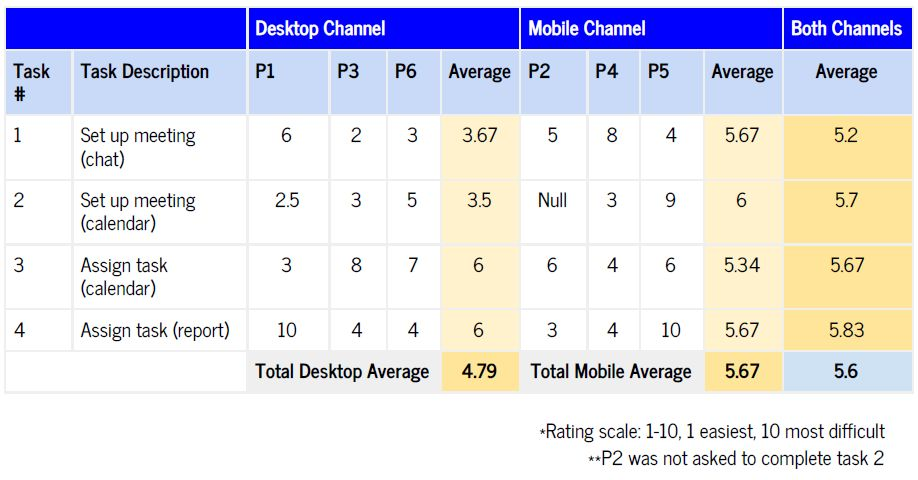

Designing a tool to promote collaborative projects between DePaul University students.
D2L coLab is an app designed to allow students to communicate about group projects. The app is intended to help in-class and online students collaborate on assignments. The app will integrate with the D2L (Desire to Learn) learning-management system, which is used by universities nationwide. The app gives students the ability to set up video meetings with classmates, participate in online chat sessions, have easy access to assignments from instructors, collaborate on shared documents, and assist with project management by allowing students to create and assign tasks to other team members and manage a team calendar. The app is available on both desktop and mobile in order to meet students where they are.
Personas
User Testing
Wireframing
Assimilating Report
Kathleen Domines
Anna Markiewicz
Natalie Roman
Samantha Wanamaker
8 weeks
Figma
These are the guiding principals our group kept in mind throughout this project:
Our team used a design charrette to begin our initial design process. A design charrette is a collaborative technique where each member of a group prepares designs to compare and contrast. This allows each member a voice in the design process and helps to reach a consensus. Each member of our team created a low fidelity wireframe for mobile and desktop applications and chose features we liked best from each of our designs. When we came to a decision as to which features we should incorporate into the product , we created one more final sketch.
Using the wireframe sketch, we moved on to creating our initial mid-fidelity prototype. Keeping user testing in mind, we decided in order to keep the length of testing to a reasonable amount and to get the best feedback, we would focus on the most important aspects of our app - messaging, with video call/meeting set-up features, and the calendar, with the ability to create tasks for group members and set up meetings.
We asked our participants to complete four tasks:
The first two tasks are similar as we created two different ways to create a meeting in our wireframes and we wanted to test which method the participants would prefer.
We recruited six participants (3 participants for each mobile and desktop prototypes). After completing each task, we asked the participant to rate it's difficulty on a scale of 1-10 with 1 being very easy and 10 being very difficult. Our average for both desktop and mobile application were low, but had room for improvement.
Taking the feedback received from the usability testing, we iterated on our design.
A recurring comment among the participants was the plus icon used in the messaging screen to set up a meeting. One tester had explained that “...having the option to add an audio or adding a photo seemed logical to put inside the plus icon… for setting up a meeting it seemed out of place.” We decided to place the meeting feature as its own button.
Another comment was the lack of contrast of the plus icon in the calendar screen. The team decided that green would be a great contrast color against the white background and gray text and will indicate to the user that it is an interactive element.
We also added a create icon in the desktop version of the calendar as well. Some participants found it difficult to finish the task involving the calendar as they did not notice the plus icon on the bottom right. So we moved it to a more prominent place at the top of the screen and gave it a brighter color as well.
The last general feedback given by participants involved the calendar menu. Many remarked that combining self tasks and group tasks into one navigation section would be better.